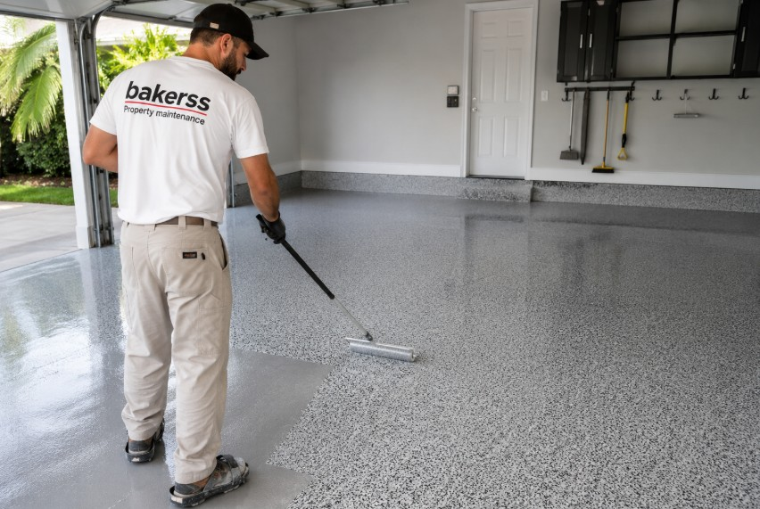

Epoxy Flooring in Myrtle Beach, Murrells Inlet & Horry County, SC
Garage floor epoxy coating and decorative concrete finishes for coastal homes and commercial properties. Durable, attractive, and easy to clean — ideal for beach properties exposed to sand, moisture, and heavy foot traffic.

Silo: Interior & Specialized
Epoxy Flooring for Coastal Horry County Properties
Coastal properties deal with sand, moisture, humidity, and heavy foot traffic in ways that destroy standard concrete and flooring quickly. Garage floors, utility rooms, and entry spaces in Myrtle Beach homes accumulate beach sand, humidity moisture, and salt residue that deteriorate uncoated concrete and trap odors. Epoxy coating solves all of these problems with a sealed, durable, easy-to-clean surface.
Bakerss applies professional epoxy floor coatings for garages, utility rooms, entryways, and decorative applications across Horry County. The result is a surface that's resistant to moisture, sand, chemicals, and wear — and dramatically easier to keep clean for both homeowners and vacation rental hosts.
What Our Epoxy Flooring Service Includes
- ✓ Concrete surface preparation and grinding
- ✓ Crack and pit repair before coating
- ✓ Moisture barrier primer application
- ✓ Full epoxy base coat application
- ✓ Decorative chip or flake broadcast (optional)
- ✓ Clear topcoat application for durability
- ✓ Custom color selection
- ✓ Garage floor coating
- ✓ Utility and laundry room coating
- ✓ Entryway and mudroom coating
Coastal Considerations in Horry County
- ✓ Beach sand — epoxy surfaces allow quick, complete sand cleanup with a broom or mop vs. sand embedding in uncoated concrete
- ✓ Moisture resistance — sealed epoxy prevents coastal humidity from infiltrating concrete slabs causing efflorescence and spalling
- ✓ Salt air — standard epoxy formulations resist the mild corrosive effect of salt air exposure indoors
- ✓ Heavy foot traffic — vacation rental garages and entry spaces receive far more traffic than typical residences; commercial-grade epoxy handles it
Combine Epoxy Flooring With These Interior & Cleaning
Keep your property completely maintained with these complementary services — all from one vendor:
🧹 Interior Cleaning
New epoxy floors are dramatically easier to clean — combine with regular interior cleaning service.
View Interior Cleaning →🎨 Painting
Fresh epoxy floors plus fresh paint — complete interior transformation for rental properties.
View Painting →🏖️ Airbnb Cleaning
Epoxy-coated floors simplify your vacation rental turnover cleaning significantly.
View Airbnb Cleaning →Epoxy Flooring by Location
Epoxy Flooring Across Horry County — By City
Epoxy Flooring in Myrtle Beach, SC
Myrtle Beach vacation rental garages and entry spaces see enormous amounts of beach sand. Epoxy flooring makes cleanup fast and simple while giving your property a polished, well-maintained appearance.
Myrtle Beach Services →Epoxy Flooring in Murrells Inlet, SC
Murrells Inlet homes near the waterfront deal with elevated humidity that can damage uncoated concrete. Epoxy coating seals the slab and prevents moisture-related deterioration.
Murrells Inlet Services →Epoxy Flooring in Surfside Beach, SC
Surfside Beach homeowners and rental owners choose epoxy flooring for the durability and easy maintenance it brings to high-traffic coastal property garages and utility spaces.
Surfside Beach Services →Epoxy Flooring in Garden City, SC
Garden City oceanfront properties benefit from epoxy's moisture and sand resistance — essential in one of Horry County's most exposed coastal communities.
Garden City Services →Epoxy Flooring in Horry County, SC
We install epoxy flooring throughout Horry County. Whether you're upgrading a primary residence or improving a vacation rental, our coatings deliver lasting coastal-ready results.
Horry County Services →Common Questions
Epoxy Flooring FAQ — Myrtle Beach & Horry County
Get Epoxy Flooring in Myrtle Beach — Durable, Coastal-Ready Finishes
Serving Myrtle Beach, Murrells Inlet, Surfside Beach, Garden City, and all of Horry County. Moisture-resistant, sand-easy, and built to last in coastal SC.